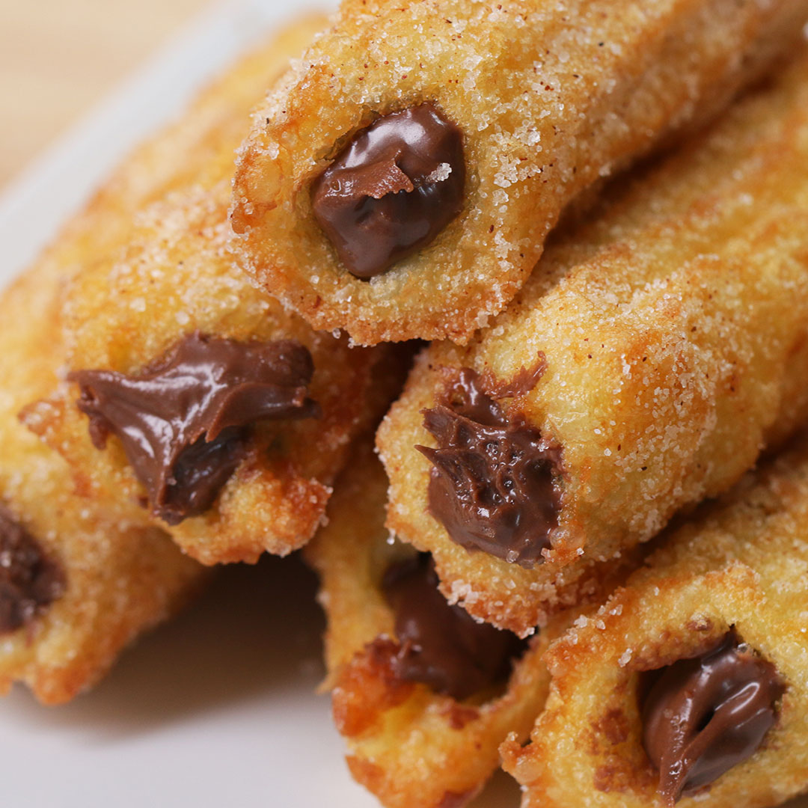

Churros

Description
A churro is a type of fried dough from Spanish and Portuguese cuisine.
They are also found in Latin American cuisine and the cuisine of the Philippines and in other areas that have received
immigration from Spanish and Portuguese-speaking countries.
Ingredients:
- 80g butter
- 1 tbsp caster sugar
- 1 cup of plain flour
- 2 eggs
- 1 tsp o cinnamon
- chocolate sauce
Steps:
- Combine the butter, sugar and 1 cup water in saucepan. Bring to boil, remove from heat, add flour and stir...
- Make the chocolate, cream and sugar in a small saucepan over medium-low heat...
- Combine extra sugar and cinnamon on a large baking tray.
- Beat the dough with the eggs.
- Fry the dough.